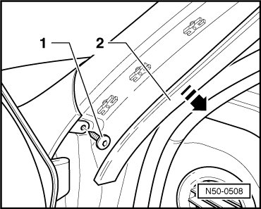

Fender
Fender
--> [ Front Fender ]
Front Fender
• Removing and installing is described only for the left fender. Removing and installing right fender is identical.
Removing
• Depending on equipment, auxiliary water heater must be must be loosened beneath left fender.
• Beneath right fender, fluid reservoir for windshield washer system must be removed.
• Depending on equipment, the antenna for navigation and telephone is installed above headlamp under the right fender. Work with extreme care when removing and installing fender.

- Front bumper, vehicles through 10.2006, removing, refer to --> [ Bumper Cover ] Front Bumper, through 10.2006
- Front bumper, vehicles from 11.2006, removing, refer to --> [ Bumper Cover Assembly Overview ]
- Remove the wheel housing liner. Refer to --> [ Front Wheel Housing Liner Assembly Overview ] Service and Repair
- Remove fender cover. Refer to --> [ Fender Cover Strip ] Moldings and Trim.
- Remove the hex nut - 5 - in area of wheel housing.
- Remove the bolts - 3 -.
- Unclip the clip - 2 - using a small screwdriver.
- Disengage drip catch rail - 2 - using a plastic wedge in - direction of arrow -.

- Remove the bolt - 1 -.
- Remove the fender.
Installation
To install, perform the steps used for removal in reverse order.
- Follow the bolt tightening sequence. Refer to --> [ Front Fender Bolt Sequence ] Fender.
- Pay close attention to the parallel alignment and the gap dimensions.